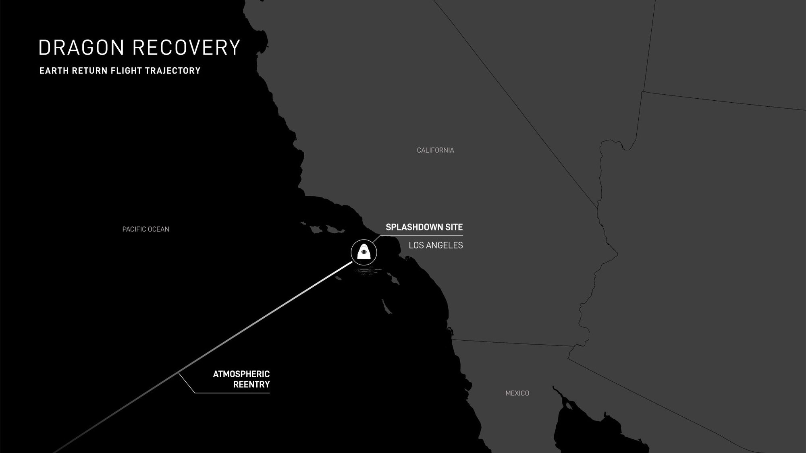
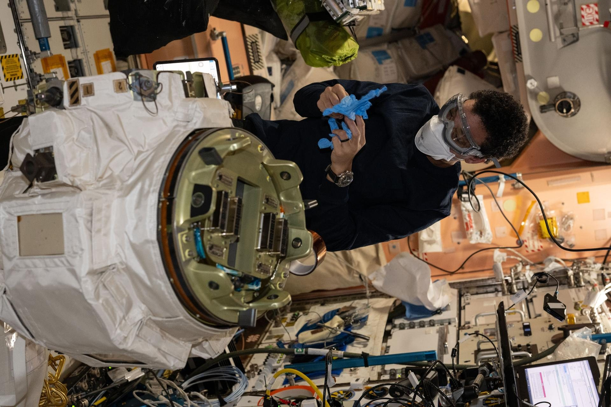
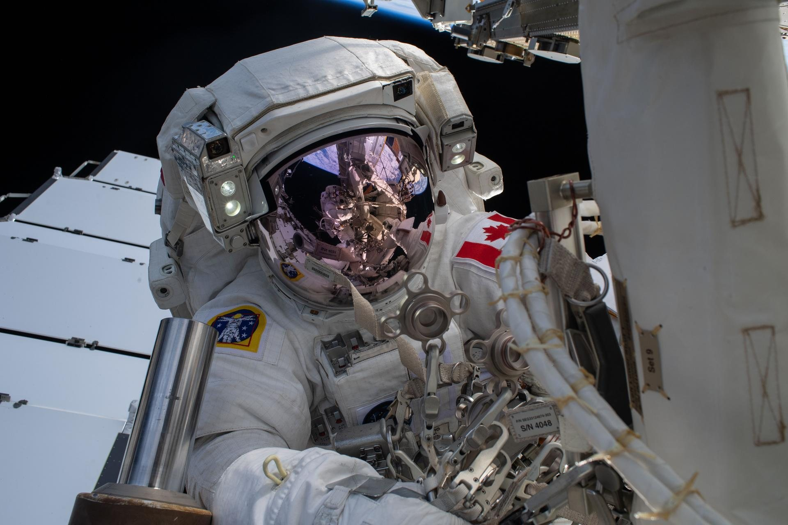

La missione che a metà ottobre aveva portato in orbita gli ultimi pannelli solari della Stazione spaziale internazionale si è chiusa sabato sera nel modo più tranquillo possibile: un'accensione dei motori sopra il Pacifico, quattro paracadute aperti, un tonfo nell'oceano davanti alla costa della California meridionale. Alle 14:03 ora del Pacifico, le 23:03 in Italia, il Dragon cargo di CRS-35 ha completato la trentacinquesima missione di rifornimento commerciale di SpaceX per la NASA. Dentro la capsula non c'è soltanto materiale da riportare a casa: ci sono esperimenti che possono essere analizzati solo nei laboratori a terra, e un pezzo del braccio robotico della stazione che gli ingegneri vogliono smontare per capire perché si è rotto.
Dal distacco all'ammaraggio
Il Dragon si è staccato dal portello rivolto verso lo spazio del modulo Harmony venerdì 20 novembre alle 18:05 ora italiana, su comando dei controllori di SpaceX a terra. Pochi minuti dopo la separazione la capsula ha eseguito quattro accensioni di allontanamento per uscire dalla zona di sicurezza attorno alla stazione. La partenza era in programma già mercoledì 18 novembre, ma la NASA e SpaceX hanno rinunciato per meteo sfavorevole nelle aree di ammaraggio al largo della California, e lo slittamento ha spostato l'arrivo in pieno giorno sulla costa ovest.
La sequenza finale si è svolta sabato sera, ora italiana. Alle 22:26 SpaceX ha confermato la fine dell'accensione di rientro; sei minuti dopo il trunk, il segmento cilindrico non pressurizzato che a ottobre aveva trasportato i pannelli solari, è stato sganciato e il cono di prua si è chiuso sopra il sistema di aggancio. Alle 23:00 si sono aperti i paracadute stabilizzatori, un minuto dopo i quattro principali. L'azienda aveva avvisato che l'arrivo sarebbe stato annunciato da un breve boom sonico poco prima dell'ammaraggio. Fra il distacco dalla stazione e il contatto con l'acqua sono passate circa 29 ore.

Perché ora si ammara in California
L'ordine delle operazioni non è casuale. Fino al 2024 i Dragon tornavano nell'Atlantico o nel Golfo del Messico al largo della Florida, e il trunk veniva sganciato prima dell'accensione di rientro: restava in orbita e ricadeva dopo giorni o mesi in un punto poco prevedibile. Alcuni frammenti sono finiti a terra, in Australia nel 2022 e in North Carolina nel 2024. Dalla missione privata Fram2, nell'aprile 2025, SpaceX ha spostato i recuperi nel Pacifico davanti alla California meridionale e ha invertito la sequenza: prima l'accensione, poi lo sgancio. Così il trunk segue una traiettoria di rientro controllata e i pezzi che sopravvivono cadono in mare aperto, lontano dalle coste. È esattamente quello che i post di SpaceX hanno scandito sabato sera.
Che cosa riporta a Terra
Il Dragon è oggi l'unico veicolo cargo in grado di riportare materiale dalla ISS: Cygnus di Northrop Grumman, Progress russo e HTV-X giapponese sono a perdere e bruciano in atmosfera alla fine del loro unico volo. Per questo ogni rientro è anche una consegna scientifica. Il pezzo forte di questo viaggio è un costrutto di vaso sanguigno stampato in 3D, usato per studiare l'invecchiamento vascolare e le malattie cardiovascolari, nello spazio come sulla Terra.
Insieme al vaso biostampato tornano organoidi tumorali congelati, trattati a bordo della stazione, che potrebbero aiutare a individuare nuove strade per le terapie contro il cancro e per la medicina personalizzata. Ci sono poi campioni microbici congelati destinati a chiarire come i batteri resistenti agli antibiotici sopravvivono, si adattano ed evolvono nello spazio, un tema che riguarda la salute degli equipaggi nelle missioni lunghe ma anche gli ospedali a terra. Fra i materiali tecnici rientra un sistema di illuminazione circadiana rimasto a bordo per più di tre anni, con cui i ricercatori hanno valutato l'effetto della luce sul sonno e sul benessere degli astronauti, e una tuta spaziale destinata alla revisione. Nei giorni prima della partenza Jessica Watkins e Luke Delaney hanno caricato anche campioni di sangue dell'equipaggio e una serie di esperimenti conservati in congelatori, incubatori e contenitori dedicati.
Il giunto guasto del Canadarm2

Nella stiva c'è anche un componente che con la scienza ha poco a che fare ma molto con la vita della stazione. Il 27 maggio, durante normali operazioni, il Canadarm2 ha assorbito più corrente del previsto in uno dei suoi giunti senza muoversi come doveva. Il braccio robotico costruito da MDA Space, lungo 17,6 metri e in servizio dal 2001, è progettato con segmenti sostituibili in orbita: il 30 giugno gli astronauti della NASA Chris Williams e Jessica Meir hanno montato un giunto del polso di ricambio in un'uscita di 7 ore e 20 minuti. A fine ottobre Watkins e Delaney hanno fotografato il pezzo difettoso, lo hanno avvolto in coperture protettive per sigillarne i componenti sensibili e lo hanno caricato sul Dragon. A terra verrà ispezionato e, se possibile, rimesso in condizione di volare come scorta. Dopo oltre venticinque anni di lavoro, l'Agenzia spaziale canadese parla di normale usura.
Com'è andata la missione
A ottobre questo sito aveva presentato la partenza nel dossier CRS-35: il Dragon porta alla ISS gli ultimi pannelli solari iROSA. Il lancio è avvenuto il 13 ottobre alle 12:33 ora italiana dallo Space Launch Complex 40 di Cape Canaveral, l'aggancio al portello zenitale di Harmony il 15 ottobre. Dei 2.867 kg di carico, 1.195 viaggiavano nel trunk: erano gli ultimi due iROSA, i pannelli solari srotolabili costruiti da Redwire per Boeing.

Quella parte del lavoro si è chiusa con successo. Il 29 ottobre Anil Menon della NASA e Joshua Kutryk dell'Agenzia spaziale canadese hanno installato il settimo pannello sul canale di potenza 2A, in un'uscita di 7 ore e 11 minuti. Il 5 novembre, in 6 ore e 59 minuti, hanno montato l'ottavo sul canale 3B, sul lato di dritta del traliccio. C'è stato un momento di tensione: dopo i collegamenti il controllo missione vedeva metà della corrente attesa e ha sospeso il dispiegamento finché, durante il passaggio nell'ombra della Terra, il problema ai connettori non è stato risolto. Poi il pannello si è srotolato da solo per circa 19 metri, in una decina di minuti, grazie all'energia accumulata nei bracci in composito.
Con quell'uscita si è concluso il potenziamento elettrico iniziato nel 2021: diciotto attività extraveicolari, otto pannelli, una capacità di generazione che passa da 160 a circa 215 kilowatt. Sono i margini di energia che serviranno alla stazione fino al ritiro e al rientro controllato, oggi previsti per la fine del 2030.
Una capsula al quarto volo
Per la capsula impiegata, CRS-35 era il quarto viaggio di andata e ritorno verso la stazione dopo CRS-26, CRS-29 e CRS-33. Il riutilizzo dei Dragon cargo è ormai la norma, e né la NASA né SpaceX hanno segnalato anomalie durante il volo libero, l'accensione o la discesa. Ora tocca ai ricercatori: i campioni congelati e l'hardware riportati a casa passano alle analisi a terra.
Il dossier sulle minacce del Congresso ai fondi di SpaceX per Starshield passa all'archivio Notizie: in primo piano c'è ora il ritorno di una missione che ha completato il ciclo dei pannelli iROSA e riportato a casa la scienza di cinque settimane in orbita.
Fonti pubbliche e tracce
Ultimo aggiornamento editoriale: 22 novembre 2026. Nel corpo non si ripete la fonte a ogni frase: le tracce sono raccolte qui. Gli orari sono convertiti in ora italiana (UTC+1, dal 26 ottobre; il lancio del 13 ottobre è in ora legale, UTC+2).
- NASA, blog della Stazione spaziale, 21 novembre 2026: ammaraggio alle 14:03 PST vicino a Los Angeles; distacco alle 11:05 CST del 20 novembre; vaso biostampato, organoidi tumorali, campioni microbici, sistema di illuminazione dopo oltre tre anni.
- NASA, 20 novembre 2026: distacco alle 12:05 EST dal portello zenitale di Harmony su comando dei controllori SpaceX; ammaraggio non trasmesso in diretta.
- NASA, 18 novembre 2026: rinuncia al distacco per meteo sfavorevole nelle zone di ammaraggio; carico di campioni di sangue, tuta e sistema di illuminazione circadiana; giunto del Canadarm2 imballato.
- NASA, 27 ottobre 2026: Watkins e Delaney fotografano, avvolgono e caricano sul Dragon il giunto del polso sostituito il 30 giugno.
- SpaceX, pagina della missione CRS-35: 37 giorni agganciato alla stazione; quarto volo della capsula dopo CRS-26, CRS-29 e CRS-33; lancio il 13 ottobre alle 6:33 ET da SLC-40.
- SpaceX su X, 20 e 21 novembre 2026: separazione e quattro accensioni di allontanamento; traiettoria e avviso del boom sonico (status 2124172655779614909, 2124172739833414113); accensione di rientro completata alle 21:26 UTC (2124253187058065868); trunk sganciato e cono chiuso alle 21:32 UTC (2124254624601510301); paracadute alle 22:00 e 22:01 UTC; ammaraggio confermato alle 22:04 UTC (2124262638192660846).
- Space.com, Mike Wall, 21-22 novembre 2026: circa 29 ore fra distacco e ammaraggio; Dragon unico cargo con capacità di rientro.
- TechTimes, 19 novembre 2026: slittamento del distacco a venerdì; storia del guasto del Canadarm2 e dell'uscita del 30 giugno.
- Agenzia spaziale canadese, 10 giugno 2026: guasto del 27 maggio, segmenti sostituibili in orbita, normale usura dopo oltre 25 anni.
- Space.com, 30 giugno 2026: sostituzione del giunto del polso in 7 ore e 20 minuti; pezzo destinato ad analisi ed eventuale revisione.
- NASA, 5 novembre 2026: ottavo iROSA sul canale 3B; 18 uscite dal 2021; capacità da 160 a circa 215 kW.
- Space.com, 5 novembre 2026: problema di corrente risolto prima del dispiegamento; apertura a 19 metri in circa 10 minuti; ritiro della ISS a fine 2030.
- NASASpaceflight, 12-13 ottobre 2026: ripartizione dei 2.867 kg di carico, 1.195 kg nel trunk; iROSA Redwire per Boeing; canali 2A e 3B.
- SpaceNews e Space.com: trasferimento dei recuperi Dragon sulla costa ovest dal 2025 e nuova sequenza con sgancio del trunk dopo l'accensione di rientro.
Fotografie utilizzabili
- Copertina e due figure: NASA Image and Video Library, pubblico dominio (iss075e0226573, iss075e0250810, iss075e0263935), tutte riferite a questa missione.
- Una figura: grafica ufficiale SpaceX della traiettoria di rientro pubblicata su X il 21 novembre 2026, credito SpaceX · uso editoriale non commerciale.
- Dettagli in scheda dei crediti fotografici. Non risultano ancora foto libere dell'ammaraggio o del recupero.
Apri il dossier Starshield archiviato · Archivio Notizie · Torna a SpaceX